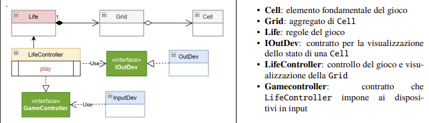

GIT repo: https://github.com/FRoffia/ISS_M_UniBo_0001240779.git
GIT repo: https://github.com/FRoffia/ISS_M_UniBo_0001240779.git
Realizzare una versione in Java del gioco Life di Conway, come gioco zero-player.
Il gioco consiste nell’introdurre una Griglia di Celle il cui stato (cella ‘viva’ o cella ‘morta’)
evolve come stabilito dallle regole di ConwayLife
L’utente umano deve poter:
- specificare la configurazione iniziale della griglia del gioco
- vedere l’evoluzione del gioco in forma opportuna
(si veda Problema della vista del gioco )
- fermare e far ripartire l’evoluzione del gioco
- pulire (a gioco fermo) la configurazione della griglia del gioco
//Il committente cosa pensa che sia una cella?????
package main.java.conway.domain;
public interface ICell{
boolean isAlive();//primitiva, restituisce stato vivo o morto della cella
void setStatus(boolean status);//primitiva, porta la cella allo stato vivo o morto
}
//Piano di test per Cell:
package main.java.test;
public class CellTest {
private ICell c; //simbolo c che spazierà nel dominio delle ICell
@Before
public void setup() {
c = new Cell();
}
@After
public void down() {
}
@Test
public void testCellAlive() {
c.setStatus(true);
assertTrue(c.isAlive());
}
@Test
public void testCellDead() {
c.setStatus(false);
assertFalse(c.isAlive());
}
}
//---------------------------------------------------------------------------------
/*Il committente cosa pensa che sia una griglia?????
E' atomica o composta? -> E' un entità composta da celle
Da quante celle? -> 100 celle NO!!!!!
Riformuliamo: quante dimensioni ha? -> E' bidimensionale
Quali sono queste dimensioni? -> Hanno una lunghezza....*/
package main.java.conway.domain;
public interface IGrid{
boolean isCellAlive(int x, int y);//restituisce lo stato della cella locata alle coordinate x e y
void setCellStatus(int x, int y, boolean v);//porta la cella locata alle coordinate x,y allo stato indicato
ArrayList<\ICell> getRow(int y);//restituisce la y-esima riga di celle
ArrayList<\ICell> getCol(int x);//restituisce la x-esima riga di celle
int getWidth();//primitiva, restituisce larghezza della griglia
int getHeight();//primitiva, restituisce altezza della griglia
ICell getCell(int x, int y);//primitiva, restituisce la cella alle coordinate x,y
public void reset();//primitiva, porta tutte le celle allo stato morto
}
Piano di test per Grid:
package main.java.test;
public class GridTest {
private IGrid g;
private int width;
private int height;
@Before
public void setup() {
width = 10;
height = 10;
g = new Grid(width,height);
g.reset();
}
@After
public void down() {
}
/*
isCellAlive deve restituire il vero valore di vita della cella puntata dalle coordinate.
setCellStatus deve modificare correttamente il valore della cella puntata dalle coordinate
Quindi posso fare un test che:
1:Settare stato a true con setCellStatus
2:Controllare stato con isCellAlive e vedere se dà true
3:Settare stato a false
4:Controllare stato con isCellAlive e vedere se dà false
*/
@Test
public void testCellAlive() {
g.setCellStatus(5,5,true);
assertTrue(g.isCellAlive(5,5));
}
@Test
public void testCellDead() {
g.setCellStatus(5,5,false);
assertFalse(g.isCellAlive(5,5));
}
/*
getRow deve restituire la riga di celle giusta.
getCol deve restituire la colonna di celle giusta.
Quindi posso fare un test che:
1:Settare stato a true con setCellStatus a una riga/colonna sola
2:Prelevare riga/colonna
3:Verificare che sia quella giusta controllando che sia tutta vera
*/
@Test
public void testGetRow() {
for(int i = 0; i < width; i++) {
g.setCellStatus(i, 5, true);
}
ArrayList<\ICell> row = g.getRow(5);
for(int i = 0; i < width; i++) {
assertTrue(row.get(i).isAlive());
}
}
@Test
public void testGetCol() {
for(int i = 0; i < height; i++) {
g.setCellStatus(5, i, true);
}
ArrayList<\ICell> col = g.getCol(5);
for(int i = 0; i < height; i++) {
assertTrue(col.get(i).isAlive());
}
}
/*getWidth e getHeight devono restituire le dimensioni passate al costruttore
1:Costruisco la griglia con valori predefiniti
2:Controllo se quelle restituite dai metodi corrispondono
*/
@Test
public void testGetHeight() {
assertEquals(g.getHeight(),height);
}
@Test
public void testGetWidth() {
assertEquals(g.getWidth(),width);
}
/*getCell deve restituire la cella giusta. Quindi:
1:Con setCellStatus porto una cella a vivo
2:Con getCell la vado a prendre
3:Controllo che sia vera*/
@Test
public void testGetCell() {
g.setCellStatus(5, 5, true);
assertTrue(g.getCell(5, 5).isAlive());
}
/*Per testare reset provo ad impostare tutte le celle a true con la primitiva get Cell, eseguo reset, e controllo che tutte siano
state portate a false*/
@Test
public void testReset() {
for(int i = 0; i < height; i++) {
for(int j = 0; j < width; j++) {
g.getCell(j, i).setStatus(true);
}
}
g.reset();
for(int i = 0; i < height; i++) {
for(int j = 0; j < width; j++) {
assertFalse(g.getCell(j, i).isAlive());
}
}
}
}
//---------------------------------------------------------------------------------
/*
Il cliente, cosa pensa che sia Life? Non lo sa, ma se ci pensiamo:
Un entità composta da una griglia (struttura)
Un entità in grado di modificare la griglia secondo le regole di Conway Life, in particolare, a partire da uno stato di griglia, di generare il prossimo. (comportamento)
*/
package main.java.conway.domain;
public interface LifeInterface {
/** Calcola l'evoluzione dello stato alla generazione successiva */
void nextGeneration();
/** Restituisce lo stato di una cella specifica */
boolean isAlive(int row, int col);
/** Imposta lo stato di una cella */
void setCell(int row, int col, boolean alive);
/** Restituisce il numero di righe e colonne */
int getRows();
int getCols();
/** Restituisce una rappresentazione grafica testuale della grglia*/
public String gridRep( );
}
//Piano di test per Life:
package main.java.test;
public class ConwayLifeTest {
@Before
public void setup() {
System.out.println("ConwayLifeTest | setup"); }
@After
public void down() {
System.out.println("ConwayLifeTest | down");
}
//@Test
public void testRule() {
System.out.println("testRule");
}
@Test
public void testOscillaFromFile() throws Exception {
// Carico un Blinker (periodo 2)
System.out.println( "testOscillaFromFile ---------------------" );
boolean[][] initial = PatternLoader.loadFromResource("src/test/resources/blinker.txt", 5, 5);
Life liferules = new Life(initial);
System.out.println( liferules.gridRep() );
System.out.println( "________________________ testOscillaFromFile " );
//
liferules.nextGeneration(); // Generazione 1 (cambia stato)
System.out.println( liferules.gridRep() );
System.out.println( "________________________ testOscillaFromFile " );
liferules.nextGeneration(); // Generazione 2 (deve tornare all'originale)
System.out.println( liferules.gridRep() );
System.out.println( "________________________ testOscillaFromFile " );
//
assertArrayEquals("L'oscillatore deve tornare allo stato iniziale dopo 2 passi",
initial, liferules.getGrid());
}
@Test
public void testOscilla() {
System.out.println("testOscilla ---------" );
LifeInterface liferules = new Life(5, 5);
// Configurazione orizzontale
liferules.setCell(2, 1, true);
liferules.setCell(2, 2, true);
liferules.setCell(2, 3, true);
System.out.println("testOscilla | Stato Iniziale:\n" + liferules.gridRep());
liferules.nextGeneration();
System.out.println("testOscilla | after 1 gen:\n" + liferules.gridRep());
// Verifica che sia diventato verticale
assertTrue(liferules.isAlive(1, 2));
assertTrue(liferules.isAlive(2, 2));
assertTrue(liferules.isAlive(3, 2));
assertFalse(liferules.isAlive(2, 1));
liferules.nextGeneration();
System.out.println("testOscilla | after 2 gen :\n" + liferules.gridRep());
// Verifica che sia tornato orizzontale (Periodo 2)
assertTrue(liferules.isAlive(2, 1));
assertTrue(liferules.isAlive(2, 2));
assertTrue(liferules.isAlive(2, 3));
}
}
//---------------------------------------------------------------------------------
/*
Game Controller
*/
package main.java.conway.domain
public interface GameController{
void reset();//reset della griglia a stato iniziale
void nextGeneration();//prosegui di una generazione
void switchCellStatus(int x, int y);//cambia lo stato della cella alle coordinate x,y
void auto(int n);//procedi automaticamente di n generazioni
}
//Test di Game Controller:

GIT repo: https://github.com/FRoffia/ISS_M_UniBo_0001240779.git